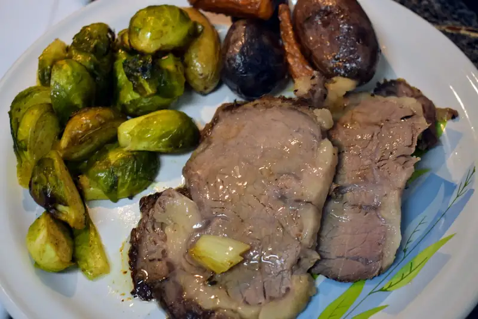

Asado de res
Este fin de semana que paso por aca fue Pascua. Tradicionalmente se hace alguna comida especial por el Domingo de Pascua así que decidimos no dejarlo pasar desaparcibido e hicimos un pequeño asado de res al horno. Digo, aparte de qué puede hacer uno si se le atravieza un corte como este en el mercado?
Lo primero fue dejar marinar la carne por un par de días, digo, lo compré el jueves, creo, así que tuvo un par de días para marinarse y absorber algo de sabor. En este caso, fue sencillo, un poco de ajo, tomillo y aceite de olivo y el corte se fue a una bolsa ziploc.
{kind=link}
El Domingo, para cocer el trozo, lo saqué unas horas antes del refrigerador para que se aclimatara. Para cuando llegó el momento de meterlo al horno, primero una sellada por todos lados para que no quede tan paliducho. De ahí, al horno @350F
{kind=link}
Le puse el termómetro y cuando llegó como a 120F, agregué las zanahorias y papas
{kind=link}
Ya para cuando llegó a término, las papas y zanahorias ya estaban cocidas.

{kind=link}
Y ya emplatado con unas coles de bruselas que se hicieron aparte:

{kind=link}